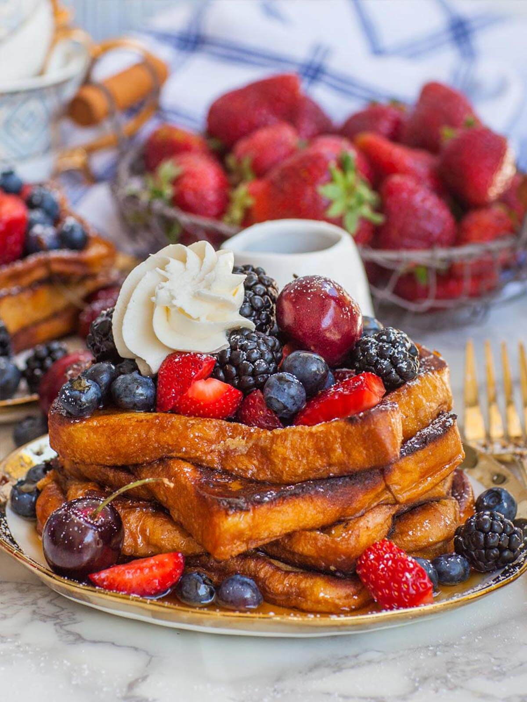

Story
November 2023. my 13 year old brother has got some sudden - very passionate -
craze for cooking. bro's favorite two things to make are breakfast items.
eggs and french toast. mostly eggs though. however i hate eggs so i present
the other option which i have eat. its been tried and tested and approved yall
btw we really gotta start teaching these kids to cook young. i still remember
that one kid called carter from tiktok. the mom was laura i think. that child
could cook better than i can. he did have some obsession with cassdias but same.